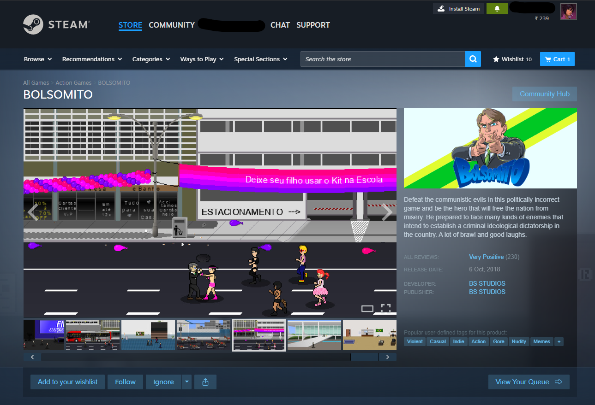

Bolsomito is a video game linked to online supporters of Jair Bolsonaro. Its name joins “Bolso,” a nickname based on Bolsonaro’s surname, with “mito,” which means “myth” or “legend” in Portuguese. Supporters used “mito” to describe Bolsonaro as an unusually strong or exceptional leader.
The game turns that image into a playable character. Its promotional text describes the player as fighting “communistic evils,” presenting political opponents as enemies in an action-game story. This is a familiar video-game setup, but here it is tied directly to Brazil’s political divisions.
The archived material includes a screenshot of the game’s Steam store page. It shows how political support could move beyond posters and social-media jokes into a game that let players act out a supporter’s fantasy.
Memes in this entry
The images below show examples connected to this topic, with links to their recorded sources and additional item details.

MEME_BR2018_002
ARCHIVE ITEM · MEME_BR2018_002
BOLSOMITO. Deixe seu filho usar o Kit na Escola. Defeat the communistic evils in this politically incorrect game and be the hero t…
The metadata identifies Steam as the platform and links to the BOLSOMITO store listing. The quoted “hero” framing comes from the game’s own promotional description.
BOLSOMITO. Deixe seu filho usar o Kit na Escola. Defeat the communistic evils in this politically incorrect game and be the hero that will free the nation from misery.
Context summary
The BOLSOMITO game turns Bolsonaro into an action-game hero fighting fictionalized communist enemies, using parody and political satire to celebrate his candidacy.